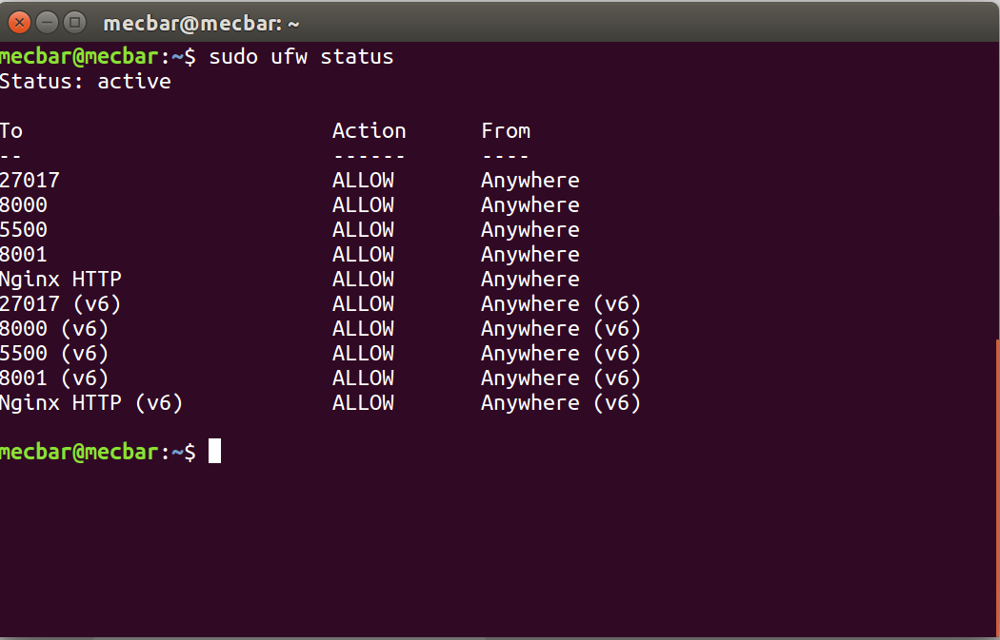
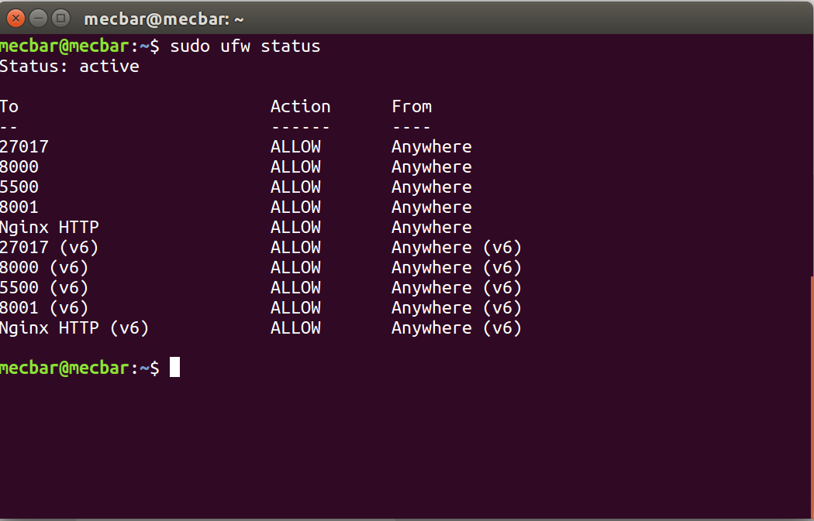
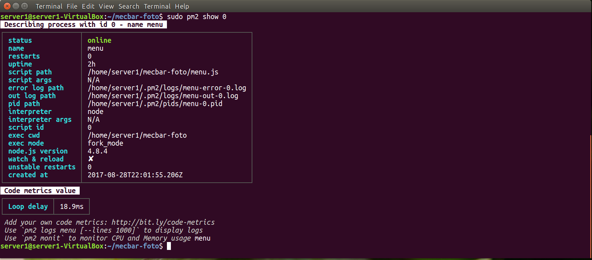

View Nginx PM2 and firewall of Linux
by Mecbar 13 settembre 2017
In the previous post we have used Nginx and PM2. Now we see how use them on Linux Ubuntu 16.04 Lts. Nginx is a web server/reverse proxy with elevate performans and can be used also as server proxy for email on different operating system. First of all install it with the command from Terminal
sudo apt-get install nginx
then setup the automatic start of the service
sudo /etc/init.d/nginx start
[ ok ] Starting nginx (via systemctl): nginx.service.
sudo systemctl status nginx.service
 other command are service stop or restart sudo systemctl stop nginx.service sudo systemctl restart nginx.service
In the following scheme we see how Nginxinteracts with the other application and the web. From the browser the user call Nginx that transfer the request at Uwsgi/Django (back-end). Django create the answer and through
Uwsgi send it via Nginx at browser for the user.
other command are service stop or restart sudo systemctl stop nginx.service sudo systemctl restart nginx.service
In the following scheme we see how Nginxinteracts with the other application and the web. From the browser the user call Nginx that transfer the request at Uwsgi/Django (back-end). Django create the answer and through
Uwsgi send it via Nginx at browser for the user.


In the image below the scheme with the web server NodeJs(Javascript) and the process manager PM2.


For communicate with the operating system we need to open the firewall policy so Nginx can transfer request and answer between client and server.
Some commands for Firewall of Linux are the followings:
In the example below we see the open port from Firewall.

In the previous post we see how use Nginx with Uwsgi and Django now instead we talk about PM2 for NodeJs. PM2 is a process manager. It allows us to handle more web application on one server. With PM2 the application are always ready on the server for the request of the user In the previous post we have seen how to install and use it with Nginx. Now we show some commands for PM2.
Below the command for see status of web application handles by Pm2.
sudo pm2 show n.ro application or name of application
sudo /etc/init.d/nginx start
[ ok ] Starting nginx (via systemctl): nginx.service.
sudo systemctl status nginx.service
 other command are service stop or restart sudo systemctl stop nginx.service sudo systemctl restart nginx.service
In the following scheme we see how Nginxinteracts with the other application and the web. From the browser the user call Nginx that transfer the request at Uwsgi/Django (back-end). Django create the answer and through
Uwsgi send it via Nginx at browser for the user.
other command are service stop or restart sudo systemctl stop nginx.service sudo systemctl restart nginx.service
In the following scheme we see how Nginxinteracts with the other application and the web. From the browser the user call Nginx that transfer the request at Uwsgi/Django (back-end). Django create the answer and through
Uwsgi send it via Nginx at browser for the user.


In the image below the scheme with the web server NodeJs(Javascript) and the process manager PM2.


For communicate with the operating system we need to open the firewall policy so Nginx can transfer request and answer between client and server.
Some commands for Firewall of Linux are the followings:
- sudo ufw status
- sudo ufw enable # enable the firewall
- sudo ufw disable # disable the firewall
- sudo ufw allow port 80 # enable port for ex. the port 80
- sudo ufw allow 'Nginx http' # enable nginx for protocol http
In the example below we see the open port from Firewall.

In the previous post we see how use Nginx with Uwsgi and Django now instead we talk about PM2 for NodeJs. PM2 is a process manager. It allows us to handle more web application on one server. With PM2 the application are always ready on the server for the request of the user In the previous post we have seen how to install and use it with Nginx. Now we show some commands for PM2.
- sudo systemctl status pm2 #for show status of PM2
- sudo systemctl stop pm2 # for stop run of PM2
- sudo systemctl start pm2
- sudo systemctl restart pm2
Below the command for see status of web application handles by Pm2.
sudo pm2 show n.ro application or name of application
- 
- sudo pm2 monit
- sudo pm2 list # application list handle by PM2
- sudo pm2 start name_app # start the app
- sudo pm2 restart name_app # restart the app
- sudo pm2 stop name_app # stop run app
Other command: